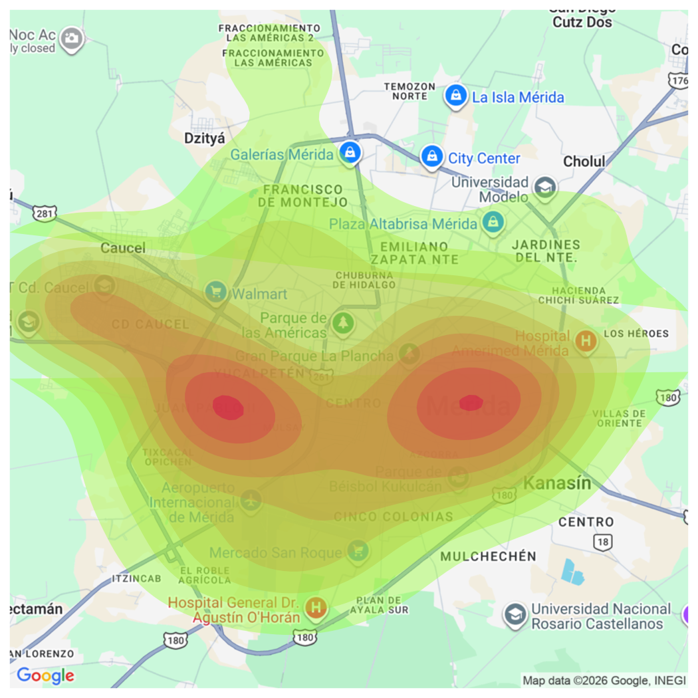
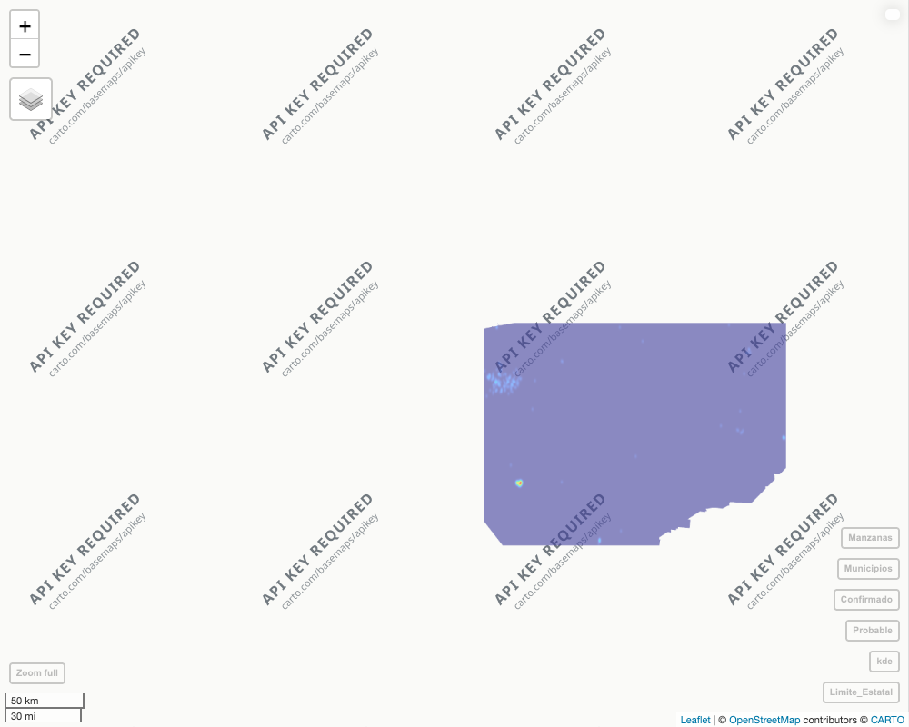

Introduction
A heatmap shows the density of cases: where they concentrate, even if they do not form foci under a strict criterion. It helps to delimit the areas of highest risk and to select the blocks to treat. densnv has two functions:
| function | level | output |
|---|---|---|
| mp_heatmap() | Locality | Static (Google Maps, ggplot) or interactive (mapview) map with the density, the cases and the blocks of highest density |
| mp_heatmap_edo() | State | Interactive map (mapview) with the density, the cases and the blocks of highest density |
The density is estimated with a bivariate Gaussian
kernel (KernSmooth::bkde2D(), bandwidth of 0.0045°
of longitude by 0.0068° of latitude, about 470 × 750 m at 20° of
latitude, on a 500 × 500 grid) and clipped to the polygon of the
locality or the state.
Data
load("dengue_mx_2026.RData") # geocoded cases: zThe geocoded cases with long, lat,
ESTATUS_CASO and SEM (epidemiological week)
are needed. mp_heatmap_edo() also uses
accuracy, to drop the cases geocoded only at locality
level.
The last four weeks (active transmission):
How to choose the kernel threshold
The kernel argument selects the blocks where the density
is greater than or equal to that value. The scale of
the density depends on the number of cases and the area, so it is better
to choose it from the percentiles of the density of the locality. This
chunk computes the density as mp_heatmap() does:
loc <- rgeomex::extract_locality(cve_edo = "31", locality = "Merida") |>
sf::st_transform(4326) |>
sf::st_make_valid()
loc$NOMGEO <- NULL
pts <- z |>
as.data.frame() |>
dplyr::filter(!is.na(long), !is.na(lat),
ESTATUS_CASO %in% c(1, 2), SEM %in% weeks) |>
sf::st_as_sf(coords = c("long", "lat"), crs = 4326, remove = FALSE)
pts <- pts[loc, ]
kde <- KernSmooth::bkde2D(x = cbind(pts$long, pts$lat),
bandwidth = c(0.0045, 0.0068),
gridsize = c(500, 500))
dens <- raster::raster(list(x = kde$x1, y = kde$x2, z = kde$fhat)) |>
terra::rast() |>
terra::mask(mask = terra::vect(loc))
v <- terra::values(dens, na.rm = TRUE)
v <- v[v > 0]
thresholds <- stats::quantile(v, c(0.50, 0.75, 0.90, 0.95))
round(thresholds, 1)
#> 50% 75% 90% 95%
#> 33.8 69.2 113.9 139.6With the 90th percentile, the blocks of the 10% of the area with the highest density are selected:
kernel_p90 <- unname(thresholds["90%"])Locality: mp_heatmap()
Static map
With static = TRUE the density is drawn over Google
Maps. This map does not show the cases, only the
density, so it is the one for reports and presentations. It needs a
Google API key registered with
ggmap::register_google().
mp_heatmap(locality = "Merida",
cve_edo = "31",
geocoded_dataset = z,
status_caso = c(1, 2),
week = weeks,
kernel = kernel_p90,
alpha = 0.4,
zoom = 12,
map_type = "roadmap",
static = TRUE,
palette = NULL,
save = FALSE)
plot of chunk static_fig
Interactive map
With static = FALSE the function returns an interactive
map (mapview) with five layers: the locality boundary, the density
(palette, e.g. viridis::turbo), the probable
and confirmed cases, and the blocks with density ≥
kernel, proposed for control. With
save = TRUE those blocks are saved as a shapefile.
mp_heatmap(locality = "Merida",
cve_edo = "31",
geocoded_dataset = z,
status_caso = c(1, 2),
week = weeks,
kernel = kernel_p90,
alpha = 0.6,
zoom = 12,
map_type = "roadmap",
static = FALSE,
palette = viridis::turbo,
save = FALSE)
plot of chunk interactive_fig
For confidentiality, the case layers (“Probable” and “Confirmado”) are hidden in the screenshot; in the interactive map they are turned on in the layers control.
State: mp_heatmap_edo()
It does the same for a whole state:
mp_heatmap_edo(cve_edo = "31",
geocoded_dataset = z,
week = weeks,
kernel = kernel_p90,
alpha = 0.6,
palette = viridis::turbo)
plot of chunk state_fig
The threshold chosen for a locality is not necessarily valid for the state: the density spreads over a larger area. Compute the percentiles with the cases of the state.
Heatmaps and active foci
- The heatmap shows where the cases of a period concentrate, without a distance or time criterion between them.
- The active foci of
mp_active_foci()require a minimum of cases within 400 m and within the temporal window, and come with the Knox test and the diagnosis of the scenario (see the vignette Active transmission foci and epidemiological scenarios).
They are complementary: the heatmap gives the overall picture and the foci tell where to intervene first.
Notes
- The bandwidth is fixed in degrees (about 470 × 750 m in the centre of the country); in the north or south of the country the equivalent distance changes slightly.
- With few cases the density depends a lot on each case; use at least 4 weeks.
-
mp_heatmap()uses the cases with statusstatus_caso;mp_heatmap_edo()uses all the geocoded cases of the given weeks.